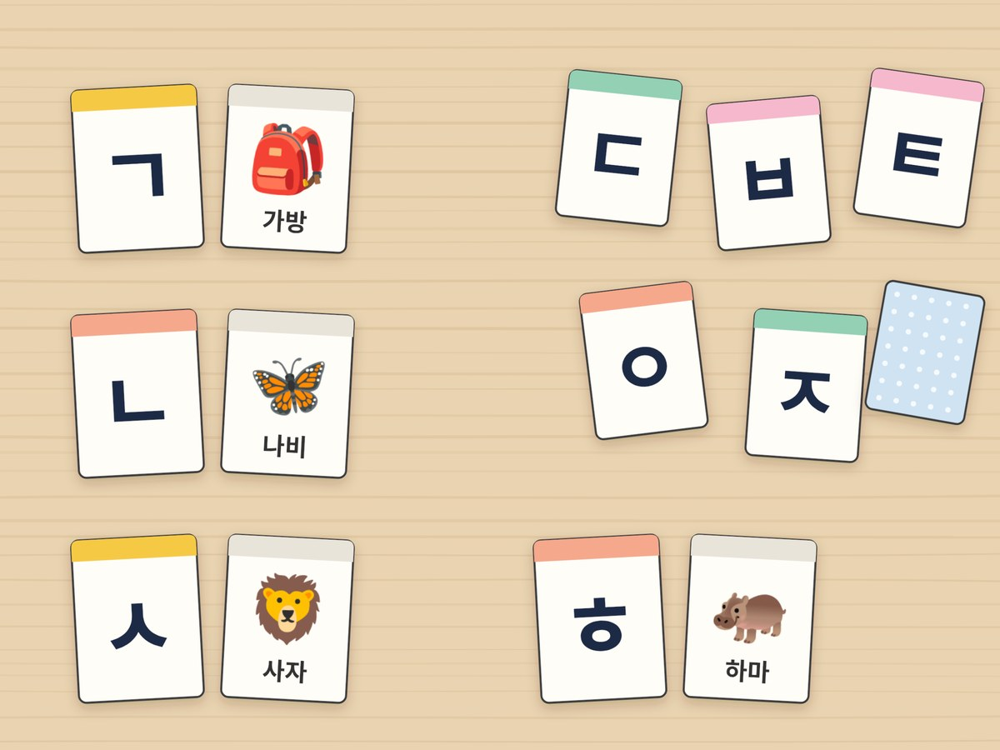

전체 단원 › 실험·활동 › 1학년 1학기 국어
우유팩 자음 카드 놀이

다 마신 우유팩으로 ㄱ부터 ㅎ까지 자음 카드를 만들어요. 낱말의 첫소리를 찾고 그림 카드와 짝을 맞추며 자음과 친해져요.
30분 · 난이도 ★☆☆ 쉬움
준비물
- 우유팩 2개 — 1L 우유팩을 씻어 말린 뒤 펼쳐요. 한 면에서 카드 2장이 나와요. 4개면 그림 카드까지 만들 수 있어요.
- 자음 카드·그림 카드 도안 — 아래에서 내려받아 인쇄해요
- 가위, 풀 — 도안을 오려 우유팩 조각에 붙여요
- 매직펜 — 도안 없이 직접 크게 써도 좋아요
하는 방법
- 우유팩 카드 자르기
씻어 말린 우유팩을 펼쳐서 한 면에 카드가 2장씩 나오게 네모로 잘라요. 우유팩은 물에 강하고 단단해서 오래 놀 수 있어요. - 자음 카드 만들기
도안의 자음 카드를 오려 우유팩 조각에 붙이거나 매직펜으로 크게 써요. ㄱ부터 ㅎ까지 14장을 순서대로 늘어놓고 "기역, 니은, 디귿…" 하고 이름을 불러 봐요. - 첫소리 찾기
부모님이 그림 카드를 보여 주며 "토끼!" 하고 말해요. 아이는 맨 처음 소리 [ㅌ]을 듣고 ㅌ 카드를 찾아요. 모양과 소리가 비슷한 ㄷ, ㅋ 카드를 함께 두면 소리를 더 잘 구별해요. - 짝 맞추기 놀이
자음 카드와 그림 카드를 섞어 모두 뒤집어 놓아요. 두 장씩 뒤집어서 ㅂ과 바나나처럼 첫소리가 맞으면 가져가요. 처음에는 6쌍으로 시작해요. - 같은 첫소리 모으기
ㄱ 카드를 놓고 ㄱ으로 시작하는 낱말을 모아요. 가방, 기차, 고구마처럼 떠오르는 낱말을 말해 봐요. 나비는 ㄴ으로 시작하니까 빼요.
생각해 봐요
- ㄱ과 ㅋ, ㄷ과 ㅌ은 모양이 어떻게 다른가요? 소리는 어떻게 다른가요?
- '오리'의 첫소리 ㅇ은 소리가 날까요?
- 내 이름의 첫 글자는 어떤 자음으로 시작하나요?
개념 정리
우리 글자는 자음과 모음이 만나서 만들어져요. ㄱ, ㄴ, ㄷ 같은 자음은 낱말 맨 앞에서 첫소리를 내요. '토끼'를 천천히 말해 보면 맨 처음에 [ㅌ] 소리가 나지요. ㅋ, ㅌ처럼 획이 하나 더 있는 자음은 바람이 더 세게 나와요. 그런데 글자 맨 앞의 ㅇ은 소리가 나지 않아요.